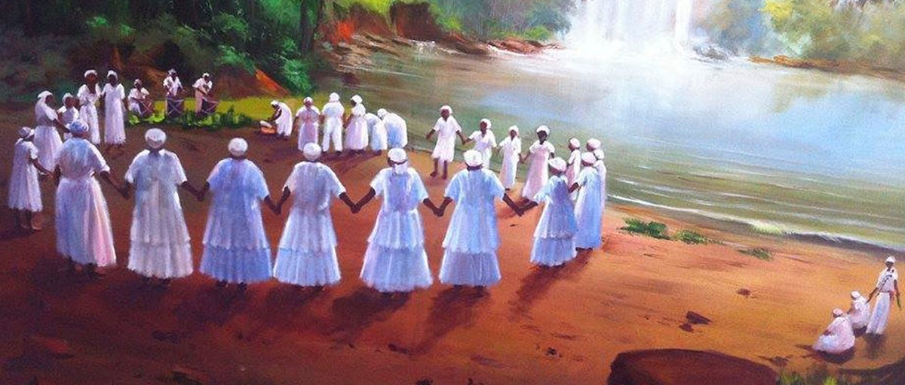

Rituais para os Orixás

Os rituais são parte essencial das práticas religiosas. A Umbanda é uma religião brasileira que combina elementos do catolicismo, espiritismo, candomblé e tradições indígenas. Ela possui diversos rituais que desempenham um papel importante na busca de conexão com o divino, orientação espiritual e cura. Vamos examinar alguns exemplos desses rituais na Umbanda:
Alguns rituais comuns para os incluem:
- Firmezas: As firmezas são rituais em que são montados altares com elementos simbólicos, como velas, flores, imagens de santos, cristais e objetos pessoais dos médiuns e das entidades espirituais. Esses altares são utilizados como pontos de concentração e conexão espiritual. As firmezas têm finalidades específicas, como proteção, fortalecimento espiritual, cura ou agradecimento, e são usadas para criar um espaço sagrado de devoção.
- Oferendas: As oferendas são rituais de gratidão e troca com as entidades espirituais. Elas envolvem a preparação e a oferta de alimentos, bebidas, velas e outros itens simbólicos. As oferendas podem ser realizadas em datas específicas, como aniversários de entidades espirituais, ou em momentos de necessidade, para buscar ajuda espiritual. Elas têm o objetivo de fortalecer a relação com as entidades e estabelecer uma conexão energética mais profunda.
- Batismo na Umbanda: O batismo na Umbanda é um ritual de iniciação em que o praticante recebe um nome espiritual e é consagrado como filho de uma entidade espiritual específica. Esse ritual tem o propósito de fortalecer os laços com o plano espiritual, receber proteção e orientação, bem como assumir um compromisso com os princípios e valores da Umbanda.
- Desobsessão: A desobsessão é um ritual realizado para auxiliar pessoas que estão sofrendo influência ou obsessão espiritual negativa. Esse processo envolve o trabalho de médiuns especializados que atuam como intermediários entre a pessoa e as entidades espirituais. O objetivo da desobsessão é libertar a pessoa das influências espirituais negativas, trazendo equilíbrio e paz.
- Corrente de Cura: A corrente de cura é um ritual no qual os médiuns se unem em uma corrente energética com o propósito de enviar energias positivas e curativas para aqueles que estão necessitando. Nesse ritual, as entidades espirituais trabalham através dos médiuns para canalizar a energia de cura e promover a restauração do equilíbrio físico, emocional e espiritual.
- Giras de desenvolvimento mediúnico: Essas giras são realizadas com o objetivo de desenvolver e aprimorar as habilidades mediúnicas dos praticantes. Durante essas giras, são realizados exercícios e práticas específicas para fortalecer a conexão com as entidades espirituais, aprimorar a intuição, expandir a percepção espiritual e desenvolver a capacidade de incorporação das entidades.
- Banhos de ervas: Os banhos de ervas são rituais de purificação e energização realizados através do uso de infusões de ervas específicas. Esses banhos podem ser preparados com diferentes finalidades, como limpeza espiritual, abertura de caminhos, proteção ou fortalecimento energético. Os banhos de ervas são utilizados para purificar o corpo físico e o campo energético, promovendo equilíbrio e harmonia.
- Rituais de defumação: A defumação é um ritual em que ervas ou resinas são queimadas para liberar fumaça e aroma no ambiente. Esses rituais são realizados para purificar e energizar o espaço, afastar energias negativas, abrir caminhos e estabelecer uma conexão com o plano espiritual. A defumação pode ser feita utilizando diversos ingredientes, como ervas secas, resinas, incensos e carvão.
- Rituais de quebra de demanda: Os rituais de quebra de demanda são realizados para romper ou neutralizar energias negativas e demandas espirituais que estão afetando negativamente uma pessoa. Esses rituais envolvem a utilização de elementos simbólicos, como velas, ervas, sal, entre outros, e são conduzidos por médiuns experientes que realizam rezas, invocações e ações para desfazer essas influências negativas.
- Rituais de descarrego: Os rituais de descarrego têm como objetivo limpar e liberar energias negativas acumuladas no corpo físico e no campo energético das pessoas. Esses rituais podem envolver rezas, passes, defumação, banhos de ervas e outros métodos de purificação.
- Rituais de consagração: Os rituais de consagração são realizados para consagrar objetos sagrados, como guias, ferramentas ritualísticas e pontos de força. Esses rituais envolvem a transmissão de energias espirituais para esses objetos, tornando-os instrumentos de conexão com as entidades e de trabalho espiritual.
- Gira de Marinheiro: Na Gira de Marinheiro, os médiuns incorporam entidades espirituais conhecidas como Marinheiros. Essas entidades estão associadas à energia dos mares e dos navegadores. A Gira de Marinheiro serve para buscar proteção contra demandas espirituais, harmonizar ambientes e auxiliar nas questões relacionadas à saúde.
- Gira de Baiano: A Gira de Baiano envolve a incorporação de entidades espirituais conhecidas como Baianos. Essas entidades estão ligadas à sabedoria popular, à cura e à proteção. A Gira de Baiano é realizada para buscar orientação, cura física e espiritual, e para trazer equilíbrio e força aos praticantes.
- Gira de Criança: Na Gira de Criança, os médiuns incorporam entidades espirituais infantis, também conhecidas como Erês. Essas entidades são consideradas puras, alegres e cheias de amor. A Gira de Criança é realizada para trazer alegria, leveza, proteção e para despertar a criatividade e a inocência nas pessoas.
- Gira de Caboclo: A Gira de Caboclo envolve a incorporação de entidades espirituais conhecidas como Caboclos. Essas entidades estão associadas à ancestralidade indígena e possuem conhecimento sobre ervas, cura e proteção. A Gira de Caboclo é realizada para buscar orientação, cura espiritual e física, e para fortalecer o espírito dos praticantes.
- Gira de Preto Velho: Na Gira de Preto Velho, os médiuns incorporam entidades espirituais conhecidas como Pretos Velhos. Essas entidades são reverenciadas por sua sabedoria, humildade e capacidade de trazer conselhos e acalento. A Gira de Preto Velho é realizada para buscar orientação espiritual, cura emocional, e para auxiliar nas questões familiares e pessoais.
- Gira de Boiadeiro: A Gira de Boiadeiro envolve a incorporação de entidades espirituais conhecidas como Boiadeiros. Essas entidades estão relacionadas à energia da vida no campo, à proteção e ao trabalho árduo. A Gira de Boiadeiro é realizada para buscar proteção, auxiliar em questões materiais, como trabalho e prosperidade, e para fortalecer a ligação com a natureza.
- Gira de Cigano: A Gira de Cigano envolve a incorporação de entidades espirituais conhecidas como Ciganos. Essas entidades estão associadas à liberdade, à intuição e à espiritualidade. A Gira de Cigano é realizada para buscar orientação, proteção, auxiliar em questões relacionadas a relacionamentos amorosos e prosperidade, e para despertar a criatividade e a intuição.
- Gira de Malandro: Na Gira de Malandro, os médiuns incorporam entidades espirituais conhecidas como Malandros. Essas entidades estão ligadas ao universo das ruas, à astúcia e à malandragem. A Gira de Malandro é realizada para buscar proteção, auxiliar em questões de justiça, equilibrar energias negativas e promover o crescimento pessoal.
- Gira de Exu: A Gira de Exu envolve a incorporação de entidades espirituais conhecidas como Exus. Essas entidades estão associadas à energia da comunicação, dos caminhos e das encruzilhadas. A Gira de Exu é realizada para abrir caminhos, promover proteção espiritual, trabalhar questões ligadas ao amor e à sexualidade, e para buscar orientação e auxílio espiritual.
- Gira de Pombagira: Pombagira é uma entidade espiritual associada à energia feminina, à sensualidade, à sedução e à força. Ela é conhecida por sua capacidade de auxiliar nas questões amorosas, nos relacionamentos e na quebra de demandas espirituais negativas. A Gira de Pombagira é realizada para trabalhar questões relacionadas ao amor, à sexualidade, ao equilíbrio emocional e à proteção energética. Os médiuns que incorporam Pombagira geralmente apresentam características de força, assertividade e sensualidade durante o ritual.
- Gira de Exu Mirim: Exu Mirim é uma entidade espiritual associada à energia infantil e à alegria. Ele representa a energia jovial, brincalhona e curiosa. A Gira de Exu Mirim é realizada com a incorporação dessas entidades espirituais para trazer alegria, descontração e proteção. Essa gira é especialmente voltada para questões relacionadas a crianças, como educação, saúde e proteção espiritual. Os médiuns que incorporam Exu Mirim geralmente expressam uma energia leve, divertida e brincalhona durante o ritual.
Esses são apenas alguns exemplos dos rituais praticados na Umbanda. Cada casa ou terreiro pode ter suas próprias práticas e particularidades, mas todos os rituais têm em comum o objetivo de promover a conexão com o divino, buscar orientação e cura, e fortalecer o espírito dos praticantes. É importante ressaltar que a participação nos rituais deve ser feita com respeito e de acordo com as orientações dos líderes religiosos e praticantes experientes.
É importante ressaltar que os rituais podem variar de acordo com a tradição religiosa e o terreiro de Umbanda ou Candomblé específico. É fundamental buscar orientação e participar dessas práticas sob a supervisão de um zelador ou sacerdote experiente.